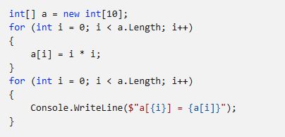
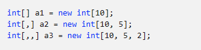
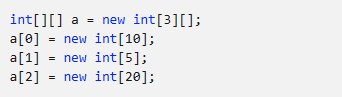
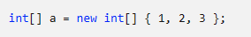
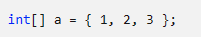
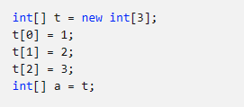
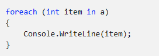
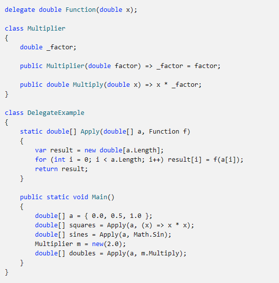
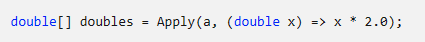
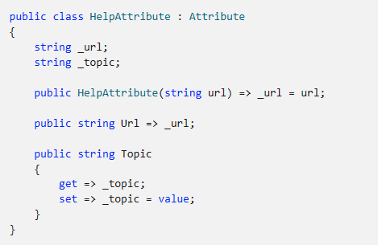

Массивы
Массив — это структура данных, содержащая ряд переменных, доступ к которым осуществляется через вычисляемые индексы. Все содержащиеся в массиве переменные, также называемые элементами массива, относятся к одному типу. Этот тип называется типом элемента массива.
Сами массивы имеют ссылочный тип, и объявление переменной массива только выделяет память для ссылки на экземпляр массива. Фактические экземпляры массива создаются динамически во время выполнения с помощью оператора new. Операция new задает длину нового экземпляра массива, которая затем фиксируется на время существования экземпляра. Элементы массива имеют индексы в диапазоне от 0 до Length - 1. Оператор new автоматически инициализирует все элементы массива значением по умолчанию. Например, для всех числовых типов устанавливается нулевое значение, а для всех ссылочных типов — значение null.
Следующий пример кода создает массив из int элементов, затем инициализирует этот массив и выводит содержимое массива.

В этом примере создается одномерный массив и выполняется работа с ней. Кроме этого, C# поддерживает многомерные массивы. Число измерений типа массива, также известное как ранг типа массива, равно 1 плюс количество запятых между квадратными скобками типа массива. Следующий пример кода поочередно создает одномерный, двухмерный и трехмерный массивы.

Массив a1 содержит 10 элементов, массив a2 — 50 элементов (10 × 5), и наконец a3 содержит 100 элементов (10 × 5 × 2). Элементы массива могут иметь любой тип, в том числе тип массива. Массив с элементами типа массива иногда называется массивом, так как длина массивов элементов не должна совпадать. Следующий пример создает массив массивов int.

В первой строке создается массив с тремя элементами, каждый из которых имеет тип int[] и начальное значение null. В следующих строках эти три элемента инициализируются ссылками на отдельные экземпляры массивов различной длины.
Оператор new позволяет указать начальные значения элементов массива с помощью инициализатора массива, который представляет собой список выражений, написанных между разделителями { и }. Следующий пример создает и инициализирует массив int[] с тремя элементами.

Длина массива определяется по числу выражений между скобками { и }. Инициализацию массива можно сократить, так как тип массива не обязательно объявлять повторно.

Оба приведенных выше примера дают результат, эквивалентный следующему коду:

Оператор foreach можно использовать для перечисления элементов любой коллекции. Данный оператор использует IEnumerable"T" интерфейс , поэтому он может работать с любой коллекцией. Следующий код перечисляет массив из предыдущего примера:
Тип делегата представляет ссылки на методы с определенным списком параметров и типом возвращаемого значения. Делегаты позволяют использовать методы как сущности, сохраняя их в переменные и передавая в качестве параметров. Принцип работы делегатов близок к указателям функций из некоторых языков. В отличие от указателей функций, делегаты являются объектно-ориентированными и типобезопасными.
Следующий пример кода объявляет и использует тип делегата с именем Function.

Экземпляр Function с типом делегата может ссылаться на любой метод, который принимает аргумент double и возвращает значение double. Метод Apply применяет заданный Function к элементам double[] и возвращает double[] с результатами. В методе Main используется Apply для применения трех различных функций к double[].
Делегат может ссылаться либо на лямбда-выражение для создания анонимной функции (например (x) => x * x , в предыдущем примере), либо на статический метод (например Math.Sin , в предыдущем примере) или на метод экземпляра (например m.Multiply , в предыдущем примере). Делегат, который ссылается на метод экземпляра, также содержит ссылку на конкретный объект. Когда метод экземпляра вызывается через делегат, этот объект превращается в this в вызове.
Делегаты могут также создаваться с использованием анонимных функций или лямбда-выражений, то есть "встроенных методов", создаваемых при объявлении. Анонимные функции могут использовать локальные переменные соседних методов. В следующем примере не создается класс:

Делегат не имеет информации или ограничений в отношении того, к какому классу относится метод, на который он ссылается. Метод, на который указывает ссылка, должен иметь те же параметры и тип возвращаемого значения, что и делегат.
Типы, члены и другие сущности в программе C# поддерживают модификаторы, которые управляют некоторыми аспектами их поведения. Например, доступность метода определяется с помощью модификаторов public, protected, internal и private. C# обобщает эту возможность, позволяя пользователям определять собственные типы декларативных сведений, назначать их для сущностей программы и извлекать во время выполнения. Программы указывают эти декларативные сведения путем определения и использования атрибутов.
Следующий пример кода объявляет атрибут HelpAttribute, который можно поместить в сущности программы для указания связей с соответствующей документацией.

Все классы атрибутов являются производными от базового класса Attribute, который предоставляется в библиотеке .NET. Чтобы задать атрибут, его имя и возможные аргументы указываются в квадратных скобках непосредственно перед объявлением соответствующей сущности.